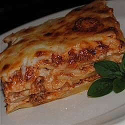

This is a long, useless paragraph of how to make the lasagna using this recipe. If you really want to know how to make an actual lasagna, I recommend you to go to google and look for a proper recipe to actually make that darn lasagna.
This is a second paragraph of the non-existing description of how to make the lasagna you want to make. Type in www.google.com in the search bar of your chosen browser and look for the recipe elsewhere, because you will not find it here.